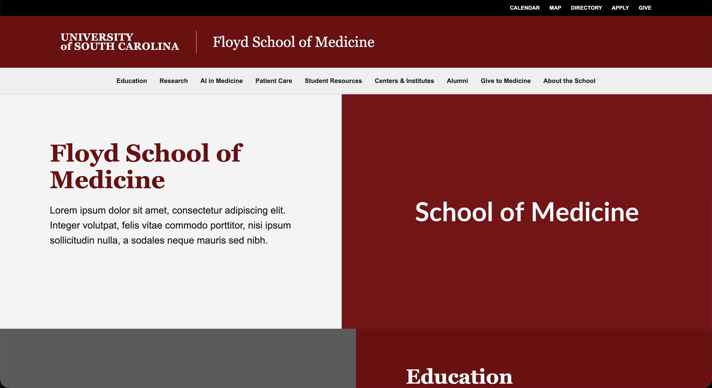
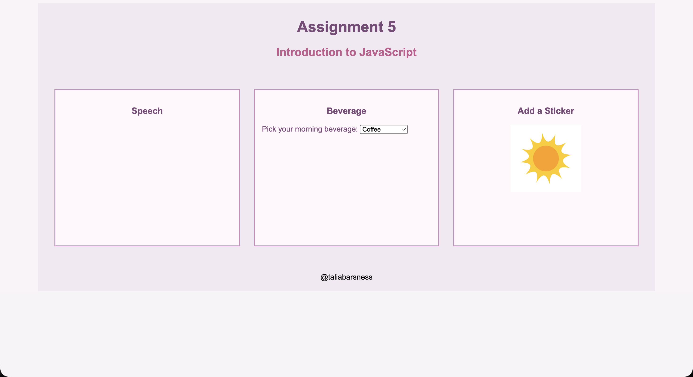
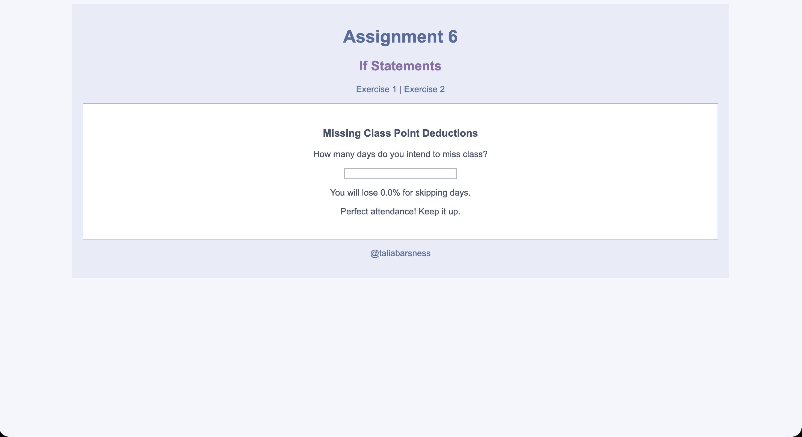
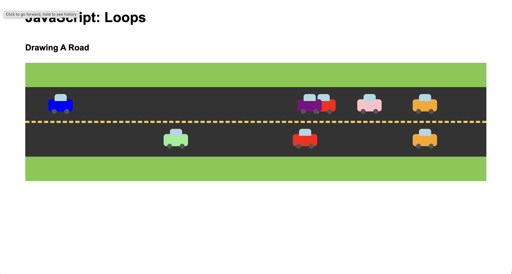
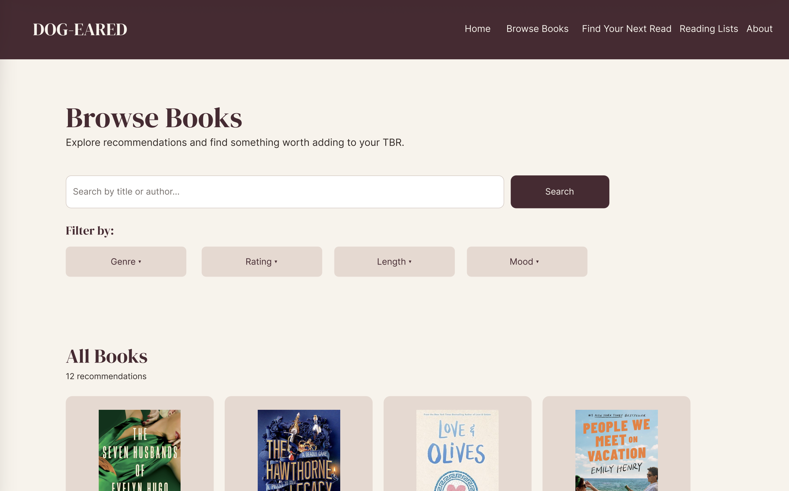
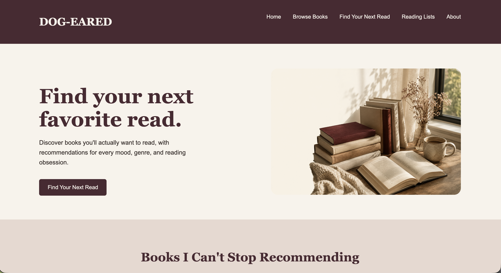

CSCE 242: Web Applications
Talia Barsness
Web technologies to support client-server computing. Implementation of client-server applications.
Github Code RepoAssignments
Assignment 1 - Basic HTML

In this assignment, I practiced the basics of HTML by creating a webpage with headings, paragraphs, images, links, lists, and a table.
Assignment 2 - Basic CSS

In this assignment, I used CSS to style a webpage with colors, backgrounds, borders, spacing, and different fonts.
Assignment 3 - Page Layout

In this assignment, I practiced using Flexbox to organize webpage content into different columns and create a responsive layout.
Assignment 4 - Recreate CSS Page

In this assignment, I recreated an existing webpage using HTML and CSS. I practiced matching the layout, colors, spacing, and overall design of the original page.
Assignment 5 - JavaScript

In this assignment, I practiced using JavaScript to add interactive features to a webpage. I used HTML, CSS, and JavaScript together to change the page based on user interaction.
Assignment 6 - JavaScript: Conditionals

In this assignment, I practiced using JavaScript conditionals to change content based on user input. I also used JavaScript to calculate missing class points and count the days until the end of the semester.
Assignment 7 - JavaScript: Loops

In this assignment, I practiced using JavaScript loops and functions to create cars and place them in random positions on a road.
Projects
Project Part 1 - Topic

For my semester project, I created a proposal that introduces my website topic and explains the different content and pages I plan to include.
Project Part 2 - Wireframes
In this part of the project, I created wireframes to plan the layout and organization of my website. The wireframes show how the content will be arranged on large and small screens.
Project Part 3 - Wireframes Complete

In this part of the project, I finished wireframing the other pages of my website. I used my previous wireframe to continue the structure and design of the site.
Project - Homepage

In this part of the project, I created the homepage for my Dog-Eared book recommendation website. The homepage includes book recommendations, genres, reading lists, and options to help readers find their next book.